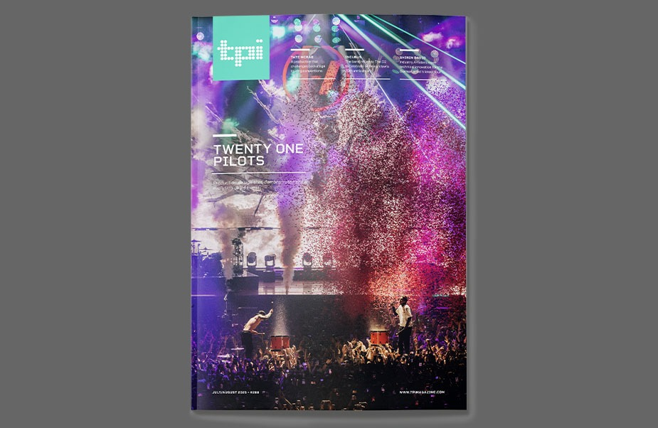

The Webby Awards
30th Annual Webby Awards · April 2026
Emphasis provided the multi-camera video production and live Veeps broadcast for this taping at Ryman Auditorium.
Read the announcement →
Utah Concert Review
November 2025
Emphasis provided the camera package and IMAG direction for the sold-out arena finale of The Richest Man in the World Tour — and cut the show's live music video.
Read the review →
San Antonio Current
Fall 2025 · Recorded November 7–8, 2025
Emphasis handled all video production for the two-night session — a multi-camera concert film capture and promotional content for the live album — and supplied the audio engineer and console that multitracked the recording: the Dancehall's first live album since Jerry Jeff Walker. Also covered by CultureMap and Tribeza.
Read the article →
PLSN
November 2025
Emphasis provided the camera package and IMAG direction across the tour — every link in the camera chain up to the wall.
Read the article →
Live Design
November 2025
Emphasis handled cameras and IMAG direction for the tour covered in this design profile.
Read the article →
Live For Live Music
July 2025
Emphasis provided the live stream production and IMAG for Tedeschi Trucks Band's Red Rocks runs three consecutive years, 2023–2025.
Read the article →
TPi Magazine — Cover Story
Issue #288 · July 2025
Emphasis founder Robert Hubbard was the Steadicam operator for all 73 shows of The Clancy World Tour, closing at London's O2 Arena.
Read the article →

JamBase
July 2024
Emphasis provided the live stream production and IMAG for both nights of the 2024 run — part of three straight years behind TTB's Red Rocks broadcasts.
Read the article →